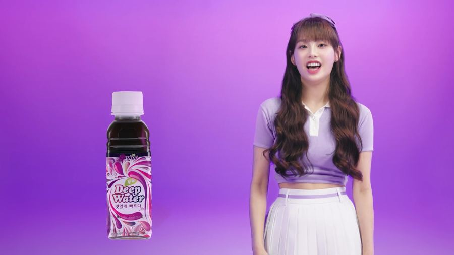
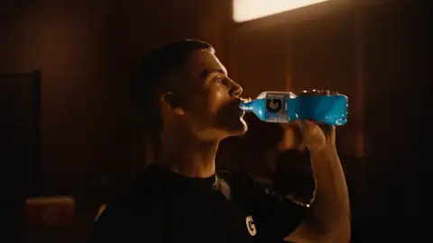
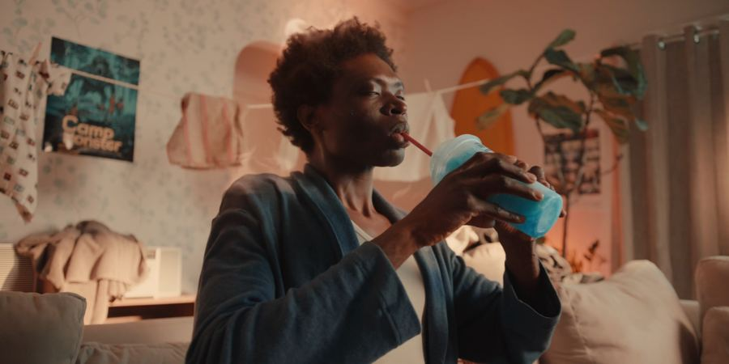

01Hook0:00 – 0:03
Visual
Extreme macro: powder hits the water and the colour explodes through the glass, landing on the first beat of the music.
On-screen text
This started in a bedroom.
The film has a charismatic young lead in a bright, modern kitchen. I want to bring Tavo's story to life through playful interactions with the product, either wordless or with very few words. It opens on an instant hook and follows the brand from a single homemade batch to a No.1 Amazon bestseller, with the kitchen changing as Tavo grows. It'll have fast editing, snap zooms, match cuts and a mix of shots to give it that fresh Gen Z energy. I'll use subtle VFX to lift the visuals a bit, like five-star reviews floating around the glass, sachets multiplying across the counter, and bold text slamming in on the beat to mark each milestone. I want to keep it polished, with good pacing, so it has the credibility investors expect. It'll close on a premium product shot announcing the fundraise, with a clear call to invest in Tavo's next chapter.
Extreme macro: powder hits the water and the colour explodes through the glass, landing on the first beat of the music.
Wide shot of a bare counter with one sachet and one glass. The lead tastes, pulls a face, tweaks and tries again in quick match cuts. On the final sip, he gives a small nod.
Snap zoom to the counter as one sachet becomes ten, then a hundred, spreading across the worktop. The phone buzzes with order notifications. Close-up of the glass as five-star reviews float up around it, and the lead reacts as they appear.
VFX: sachet multiplication, floating review cards.


A match cut swipes from the cluttered counter to a clean, styled one, sun pouring in. New product silhouettes appear one by one along the counter. The lead looks across the line-up.

The pace drops. A slow push-in on the hero product, perfectly lit, with condensation on the glass.


The product holds in frame, then cut to the end card.
End card: investment link + Tavo logo.
